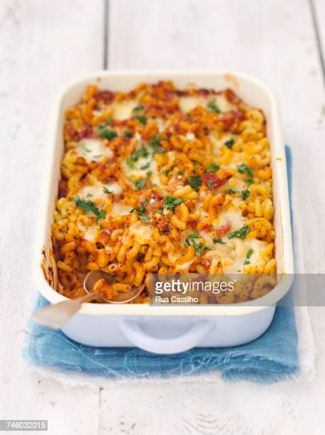

Pasta Recipe!

Ingredients:
- 1 tbsp olive oil
- 1 onion, chopped
- 1 garlic clove, crushed
- 400g can cherry or chopped tomatoes
- pinch sugar
- few dashes Worcestershire sauce
- 100g rigatoni or other tube-shaped pasta
- 50g gruyère or cheddar, grated
- hunk of baguette or sliced bread, coarsely grated
- 2 frankfurters, sliced (optional)
Steps:
- Heat the oil in a medium pan and fry the onion for 5 mins until softened and lightly golden. Stir in the garlic and cook for a further min. Mix in the tomatoes and sugar, bring to the boil and simmer for 20 mins. Add a few dashes of Worcestershire sauce and season to taste. This basic sauce can now be chilled or frozen.
- Meanwhile, cook the pasta according to pack instructions. Heat the grill to high. Mix together the cheese and breadcrumbs.
- Drain the pasta and stir into the sauce. Tip in the frankfurters (if using) and spoon into a heatproof dish. Scatter over the cheesy crumbs and grill for 3-5 mins or until bubbling hot and golden. Serve with a simple salad.